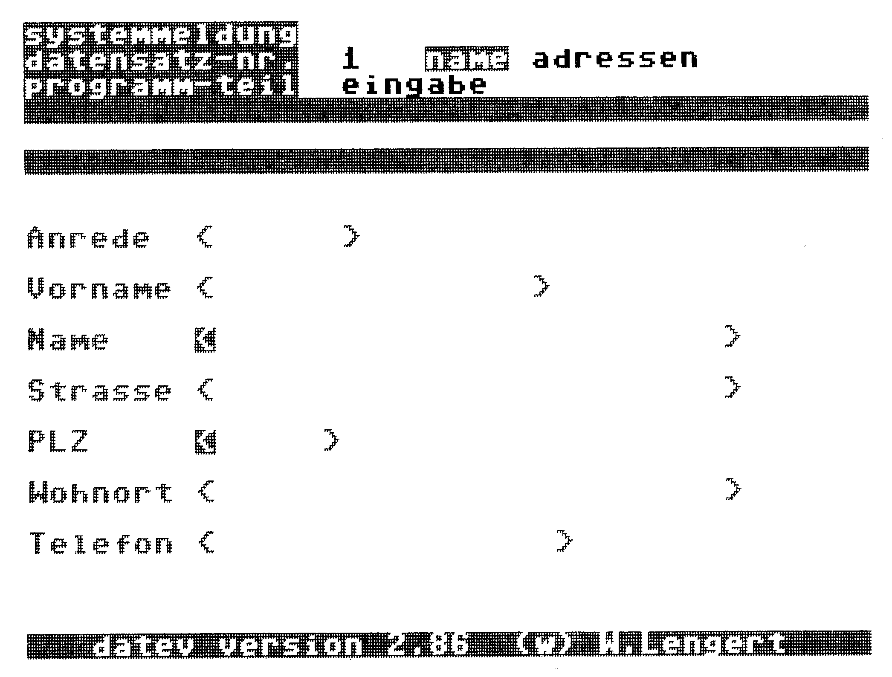

Daten individuell und professionell verwaltet
Werfen Sie Ihre Zettelkartei aus dem Fenster! Diese altertümliche Methode, Ordnung in eine Sammlung zu bringen, gehört nun dank »DATEV« endgültig der Vergangenheit an.
Das universelle Dateiverwaltungsprogramm »DATEV« (Listing 1) ist vollständig in Assembler geschrieben und besitzt viele Funktionen, die man eigentlich nur von einem teuren professionellen Programm erwarten würde. Es ermöglicht die Verwaltung von bis zu 1024 Datensätzen bei einer maximalen Datensatzlänge von 256 Zeichen. Bis zu drei von maximal 15 Feldern können hierbei jeweils als Indexfelder definiert werden (Indexfelder erlauben den schnellen, direkten Zugriff auf einen Datensatz). Systematisches Durchsuchen der Einträge nach bestimmten Kriterienkombinationen ist ebenfalls über die Indexfelder möglich. Die gespeicherten Datensätze können auf Wunsch nach diesen Feldern sortiert werden. Die Form der Ausgabe auf dem Bildschirm oder einen Drucker kann über eine spezielle Formatzeile definiert werden. Auf diese Weise stellt auch das Drucken von Etiketten kein Problem dar.
Bedienungshinweise
Das Programm wird mit »LOAD"DATEV",8« geladen und mit »RUN« gestartet. Nach dem Start erscheint zunächst eine Übersicht der Kommandos und nach einem Tastendruck das Hauptmenü. Durch Drücken der Funktionstasten erreichen Sie folgende Routinen:
| <F1> | Laden einer Datei von Diskette |
| <F2> | Senden von Befehlen zur VC 1541 |
| <F3> | Inhaltsverzeichnis der Diskette |
| <F5> | Neue Datei anlegen |
| <RUN/STOP> | Programmende |
Wurde zuvor eine Datei geladen, zusätzlich noch:
| <F7> | Geladene Datei aktivieren |
Neue Datei anlegen (<F5>):
Wenn Sie diesen Programmteil anwählen, ist es wichtig, daß Sie sich über die Anzahl und Länge der einzelnen Felder im klaren sind, da ein Ändern der Eingabemaske nach dem Eröffnen der Datei nicht mehr möglich ist. Eine große Rolle spielen dabei auch die Indexfelder (siehe auch unter Programmteil »Suchen«).
Geben Sie nun Ihre Maske ein. Dabei wird der Anfang eines Feldes mit '<' und das Ende mit '>' gekennzeichnet. Indexfelder werden am Anfang mit einem reversen '<' gekennzeichnet. Als Beispiel soll die Maske einer Adreßdatei dienen (Bild 1).

Der Einfachheit halber sind die Zeichen zur Kennzeichnung der Felder auch auf die Funktionstasten <F1>, <F3> und <F5> gelegt. Nachdem Sie die Maske erstellt haben, speichern Sie diese ab. Drücken Sie dazu <F7>, und geben Sie dann einen Dateinamen ein. Nach dem Abschluß der Eingabe mit <RETURN> wird die Datei auf der Diskette angelegt. Dieser Vorgang kann je nach Größe der Datei, bedingt durch die geringe Geschwindigkeit der Floppy 1541, bis zu einigen Minuten dauern. Danach befinden Sie sich wieder im Auswahlmenü.
Nach dem Öffnen der Datei sind die ersten 256 Datensätze freigegeben. Sind diese editiert, wird Platz für weitere 256 Datensätze geschaffen. Wurden bereits 1024 Datensätze eingegeben, so erscheint die Systemmeldung »Datei voll«.
Datei laden (<F1>):
Zur Eingabe der Daten muß die Datei zuvor mit diesem Programmpunkt geladen werden. Drücken Sie die Taste <F1>, und geben Sie den Namen der Datei ein. Dieser kann mit »*« abgekürzt werden. Wenn Sie anstelle eines Namens nur <RETURN> drücken oder auch nach einer Fehlermeldung, gelangen Sie wieder ins Auswahlmenü. Nachdem die Datei geladen ist, befinden Sie sich im Eingabemodus.
Dateneingabe:
Die Eingabe eines jeden Feldes wird mit <RETURN> abgeschlossen. Ist das letzte Feld erreicht, wird der Datensatz auf Diskette gespeichert und der nächste Datensatz kann eingegeben werden.
Durch Drücken der <F1>-Taste wird die letzte Eingabe des Feldes wieder sichtbar.
Kommandos:
Mit der <CBM>-Taste erreichen Sie die Kommandoeingabe. Folgende Befehle stehen zur Verfügung:
| (ungeSHIFTet) | ||
|---|---|---|
| <l> | = | Löschen |
| <a> | = | Ändern |
| <d> | = | |
| <s> | = | Suchen |
| <f> | = | Formatieren (Ausgabe Drucker) |
| <e> | = | Eingabe |
| <q> | = | Quit (Programmende) |
| <c> | = | Color (Farben ändern) |
| <w> | = | Wählen |
| <+> | = | Blättern (vor) |
| <-> | = | Blättern (zurück) |
| <h> | = | Hardcopy |
| <z> | = | Zeichensatz wechseln |
| <*> | = | Alphabetische Ausgabe |
| (geSHIFTet) | ||
| <A> | = | Ändern (global) |
| <D> | = | Drucken (global) |
| <M> | = | Monitor (global) |
| <L> | = | Löschen (global) |
Bei Dateien ohne Indexfelder entfällt das Kommando »s« (Suchen) und somit auch die Kommandos »l« (Löschen), »a« (Ändern) und »m« (Monitor). Das Kommando »d« (Drucken) bewirkt einen Ausdruck der gesamten Datei.
Löschen (<L>):
Nach Bestätigen der Sicherheitsabfrage mit »J« für Ja wird der angezeigte Datensatz gelöscht.
Ändern (<A>):
Der gerade angezeigte Datensatz kann durch Überschreiben geändert werden.
Drucken (<D>):
Der angezeigte Datensatz wird ausgedruckt (siehe auch Programmteil »Formatieren«). Datev spricht in der abgedruckten Form einen Drucker mit Centronics-Interface am User-Port an. Soll ein serieller Drucker angeschlossen werden, so muß vor dem Starten des Programms »POKE 8613,0« eingegeben und die geänderte Version danach mit »SAVE"filename",8« gespeichert werden.
Eingabe (<E>):
Mit dieser Taste verlassen Sie den Kommandomodus und kehren zurück zur Dateneingabe.
Suchen (<S>):
Dieses Kommando ist nur möglich, wenn Indexfelder definiert wurden. Der Cursor befindet sich im ersten Indexfeld, und Sie können den ersten Suchbegriff eingeben (maximal 8 Zeichen). Die Eingabe wird mit <RETURN> beendet, worauf der Cursor ins nächste Indexfeld springt. Sie können Indexfelder leer lassen, indem Sie nur <RETURN> drücken. Nach der letzten Eingabe wird die Suche gestartet. Wurden Datensätze gefunden, kann die Ausgabe wahlweise über Drucker oder Monitor erfolgen. Die Suchfunktion arbeitet folgendermaßen: Jedes Indexfeld wird nacheinander mit den im Speicher stehenden Daten verglichen. Dabei werden als gefunden in die Tabelle eingetragen:
— Indexfelder, die leer sind (kein Suchbegriff eingegeben)
— Indexfelder mit Übereinstimmung der ersten acht Zeichen
— Indexfelder, die bis zum Leerzeichen übereinstimmen.
Haben Sie beispielsweise eine Adreßkartei mit den Indexfeldern NAME und PLZ angelegt und möchten nun alle »Müllers» in »Düsseldorf« suchen, geben Sie im Indexfeld NAME »Müller« und im Indexfeld PLZ »4000« ein. Es werden nun alle Müllers, die in Düsseldorf wohnen, in die Tabelle eingetragen. Geben Sie bei PLZ nur »4« ein, so werden alle Adressen mit der Postleitzahl 4xxx eingetragen (x steht hier für beliebige Zeichen). Dort stehen sie dann zur Ausgabe zur Verfügung. Wenn Sie alle Indexfelder leer lassen (nur <RETURN> drücken), wird die gesamte Datei in die Tabelle eingetragen und kann dann zum Beispiel ausgedruckt werden.
Wählen (<W>):
Durch Eingabe einer zulässigen Datensatznummer kann jeder Datensatz direkt angewählt und angezeigt werden.
Farben ändern (<C>):
Mit den Funktionstasten <F1>, <F3>, <F5> und <F7> werden die Farben geändert. <RETURN> führt wieder zur Kommandoeingabe.
Quit (<Q>):
Das Programm wird beendet und alle Änderungen auf Diskette gespeichert. Es ist empfehlenswert, die Datei nach längerem Arbeiten zu speichern. Vom Auswahlmenü können Sie die Datei durch Drücken der Taste <F7> wieder aktivieren.
Formatieren (<F>):
Im Eingabefeld erscheint eine Leerzeile mit einem abschließenden »:«. Über diese Zeile wird der Ausdruck gesteuert. Hierbei bedeuten:
| »:« | Ende der Formatzeile |
| »0« bis »9« | Feldnummern |
| »;« | Leerfeld |
| »,« | Zeilenvorschub |
| »*« | Datensatznummer |
Die Feldnummern werden von links nach rechts und von oben nach unten festgelegt. Die Ziffern können auch bei der Maskeneingabe vor die Felder geschrieben werden.
Nehmen wir als Beispiel unsere Adreßdatei. Wollen Sie zum Beispiel Adressen auf Etiketten drucken, könnte die Formatzeile wie folgt aussehen:
»1,2,3,,4;;5,:«
Als erstes wird die Anrede ausgedruckt, dann ein Zeilenvorschub, danach Name/Vorname, wieder ein Zeilenvorschub, nun die Straße, jetzt zwei Zeilenvorschübe, dann die PLZ gefolgt von zwei Leerzeichen, daneben der Ort, und zum Abschluß noch ein Zeilenvorschub. Der Doppelpunkt kennzeichnet das Ende. Durch Ändern der Formatzeile kann die Druckausgabe jederzeit neu formatiert werden. Es ist unbedingt notwendig, als letztes einen Zeilenvorschub (»,«) in die Formatzeile einzugeben.
Blättern (<+>/<->):
Der nächste beziehungsweise vorhergehende Datensatz wird angezeigt. Mit diesem Kommando können Sie sämtliche Datensätze in der eingegebenen Reihenfolge durchblättern. Mit <RETURN> kommen Sie zurück zur Kommandoeingabe.
Hardcopy (<H>):
Nach Drücken dieser Taste wird eine Kopie des Bildschirms auf dem Drucker ausgegeben.
Zeichensatz laden (<Z>):
Das Programm lädt einen Zeichensatz nach, wenn er sich unter dem Namen »ZEICHENSATZ 3« auf der Diskette befindet. Der Zeichensatz muß den Speicherplatz von $0800 bis $1000 belegen. Diese Routine wird nach dem Start von »DATEV« automatisch ausgeführt.
Alphabetische Ausgabe (<*>):
In das Indexfeld, nach dem der alphabetische Ausdruck erfolgen soll, geben Sie bitte den »Pfeil nach links« ein. Die restlichen Indexfelder können wie bei der Funktion »Suchen« benutzt werden.
Globale Kommandos
Die geSHIFTeten Kommandos »L«, »D«, »M« und »A« beziehen sich immer auf die von der Suchroutine erstellte Tabelle. Das heißt, alle in dieser Tabelle eingetragenen Datensätze werden von diesen Kommandos beeinflußt.
Global Drucken (<SHIFT> <D>):
Alle Datensätze der Tabelle werden nach Vorgabe der Formatzeile auf dem Drucker ausgegeben. Die Ausgabe kann mit <RUN/STOP> gestoppt, mit <RETURN> fortgesetzt, beziehungsweise mit der <CBM>-Taste abgebrochen werden.
Global Löschen (<SHIFT> <L>):
Alle Datensätze in der Tabelle werden nach Bestätigung der Sicherheitsabfrage mit »J« gelöscht.
Monitor (<SHIFT> <M>):
Hier gilt das gleiche wie bei »Drucken«, die Ausgabe erfolgt jedoch nun auf den Bildschirm.
Global Ändern (<SHIFT> <A>):
Alle Datensätze in der Tabelle können mit diesem Befehl gleichzeitig geändert werden. Felder, die nicht geändert werden sollen, überspringen Sie einfach mit <RETURN>. In die Felder, die global geändert werden sollen, geben Sie den neuen Eintrag ein. Nach Beendigung der Eingabe werden alle Datensätze in der Tabelle auf die gleiche Weise geändert.
System-Fehlermeldungen
Die im folgenden beschriebenen Meldungen werden blinkend angezeigt. Nach <RETURN> werden sie wieder gelöscht.
»Eingabe nicht erlaubt«:
Es wurde ein falsches Kommando eingegeben. Geben Sie erneut einen Befehl ein.
»Feldlänge zu groß«:
Ein Feld übersteigt die maximale Länge von 255 Zeichen. Ändern Sie die Maske entsprechend.
»Max. 15 Felder«:
Es wurden mehr als 15 Felder definiert. Ändern Sie die Maske.
»Max. 3 Indexfelder«:
Es wurden mehr als 3 Indexfelder definiert. Die Maske muß korrigiert werden.
»Datensatz zu lang«:
Alle Felder zusammen übersteigen die maximale Länge von 255 Zeichen. Kürzen Sie die Feldlängen.
»Datensatz-Nr. zu hoch«:
Es wurde eine Datensatz-Nummer angesprochen, die nicht existiert. Wählen Sie eine kleinere Nummer.
»Bitte eine Zahl eingeben«:
Es wurden unerlaubte Zeichen eingegeben. Der Computer verlangt jedoch eine Zahl.
»Ausgabe Formatieren«:
Sie wollten etwas ausdrucken und haben die Formatzeile noch nicht eingegeben.
»Datentabelle leer«:
Sie haben ein globales Kommando eingegeben, jedoch über die Suchfunktion die Tabelle noch nicht erstellt.
»Datei voll«:
Die maximale Anzahl von 1024 Datensätzen ist erreicht. Löschen Sie, wenn möglich, unwichtige Datensätze.
»Falscher Dateiname«:
Sie haben einen Namen eingegeben, der auf der Diskette existiert, jedoch keine Datei ist.
»Datensatz nicht gefunden«:
Es wurde kein Datensatz mit dem(n) angegebenen Suchbegriff(en) gefunden.
Hinweise zum Programm
Geben Sie das Listing bitte mit dem MSE ein und speichern es auf Diskette. Das Programm belegt 32 Blöcke und im Speicher den Bereich von $8000 bis $9F84. Die Indexfelder werden im RAM von $2000 bis $7FFF abgelegt. Der Bereich von $C000 bis $CF00 beinhaltet die Maske, die Parameter, und wird zur Zwischenspeicherung benutzt. Das Programm läuft zusammen mit »HYPRA-LOAD«. Die Funktionstasten werden durch Einschreiben des Wertes 32 in die Speicherstelle $02 abgeschaltet. Wurde DATEV versehentlich mit <RUN/STOP> verlassen, kann es mit »SYS 32768« erneut gestartet werden.
(Wilfried Lengert/nj)